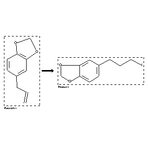

|  |
| FA | RX(1); FLST(1); RX(4) |
Reaction (1 of 1)
| Reaction ID | 1767870 |
| Reactant BRN | 136380 |
| Reactant | 5-allyl-benzo[1,3]dioxole |
| Product BRN | 4675203 |
| Product | 5-(3-iodo-propyl)-benzo[1,3]dioxole |
| No. of Reaction Details | 4 |
Reaction Details (1 of 1)
| Reaction Classification | Preparation |
| Reagent | 1.) dicyclohexylborane, 2.) NaOAc, I2 |
| Other Conditions | 1.) 0 deg C -> 25 deg C, 2 h, 2.) MeOH, 1 h |
| Comment | Yield given. Multistep reaction |
| Citation Pointer | 5772399; Journal; Kabalka, George W.; Sastry, K. A. R.; Sastry, K. Usha; SYNCAV; Synth.Commun.; EN; 12; 2; 1982; 101-106; |
Reaction Details (2 of 1)
| Reaction Classification | Preparation |
| Reagent | 1.) BH3-THF, 2.) sodium acetate, aq. sodium iodide, chloramine-T |
| Other Conditions | 1.) THF, 0 deg C, 1 h, 2.) methanol, 25 deg C, 1 min |
| Comment | Yield given. Multistep reaction |
| Citation Pointer | 5568437; Journal; Kabalka, George W.; Gooch, Eugene E.; JOCEAH; J.Org.Chem.; EN; 46; 12; 1981; 2582-2584; |
Reaction Details (3 of 1)
| Reaction Classification | Preparation |
| Reagent | 1) BH3*THF, 2) iodine monochloride |
| Other Conditions | 1) 0 deg C, 1h, 2) RT, 45 min. |
| Comment | Yield given. Multistep reaction |
| Citation Pointer | 5574608; Journal; Kabalka, George W.; Gooch, Eugene E.; JOCEAH; J.Org.Chem.; EN; 45; 18; 1980; 3578-3580; |
Reaction Details (4 of 1)
| Reaction Classification | Preparation |
| Reagent | 1.) dicyclohexyborane, 2.) AcONa, ICl |
| Other Conditions | 1.) THF, 2.) 25 deg C, 15 min |
| Comment | Yield given. Multistep reaction |
| Citation Pointer | 5940802; Journal; Gooch, E. E.; Kabalka, G. W.; SYNCAV; Synth.Commun.; EN; 11; 7; 1981; 521-526; |
Reference (1 of 4)
| Citation Number | 5568437 |
| Document Type | Journal |
| Authors | Kabalka, George W.; Gooch, Eugene E. |
| CODEN | JOCEAH |
| Journal Title | J.Org.Chem. |
| Language Code | EN |
| (Series) Volume | 46 |
| Number | 12 |
| Publication Year | 1981 |
| Page | 2582-2584 |
Reference (2 of 4)
| Citation Number | 5574608 |
| Document Type | Journal |
| Authors | Kabalka, George W.; Gooch, Eugene E. |
| CODEN | JOCEAH |
| Journal Title | J.Org.Chem. |
| Language Code | EN |
| (Series) Volume | 45 |
| Number | 18 |
| Publication Year | 1980 |
| Page | 3578-3580 |
Reference (3 of 4)
| Citation Number | 5772399 |
| Document Type | Journal |
| Authors | Kabalka, George W.; Sastry, K. A. R.; Sastry, K. Usha |
| CODEN | SYNCAV |
| Journal Title | Synth.Commun. |
| Language Code | EN |
| (Series) Volume | 12 |
| Number | 2 |
| Publication Year | 1982 |
| Page | 101-106 |
Reference (4 of 4)
| Citation Number | 5940802 |
| Document Type | Journal |
| Authors | Gooch, E. E.; Kabalka, G. W. |
| CODEN | SYNCAV |
| Journal Title | Synth.Commun. |
| Language Code | EN |
| (Series) Volume | 11 |
| Number | 7 |
| Publication Year | 1981 |
| Page | 521-526 |